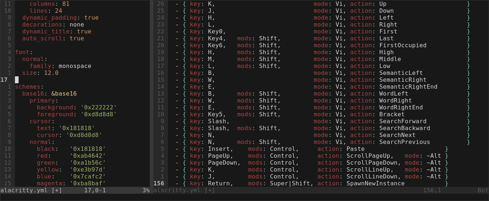
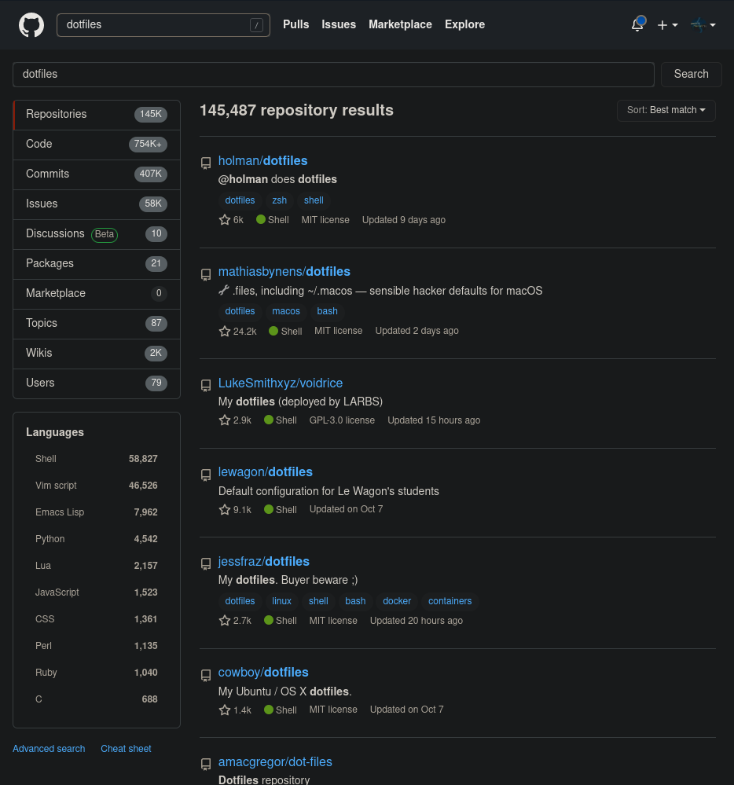

🍚
Pedro Mendes (ist197144)
“Rice” is a word that is commonly used to refer to making visual improvements and customizations on one’s desktop. It was inherited from the practice of customizing cheap Asian import cars to make them appear to be faster than they actually were - which was also known as “ricing”. - /r/unixporn
At it’s heart it’s a simple process, you install a program, look at what configuration options it allows for and you customize that program.
Repeat until you get that perfect rice.

A bit of my alacritty config file
What kinds of things can you costumize?
Well, pretty much everything! Since the code of most of these programs is open source you can just change the program if the config file isn’t enough.
There are 2 main kinds of window managers:
This works by making the first window you open full screen and the subsequent windows split the space of the current window in half.
When remote classes started I had a recurring problem. I kept forget to actually attend classes. So I thought of setting up reminders, but that just wasn’t enough and I had another idea.
#!/bin/bash
export DISPLAY=:0
CLASSES="
Mon:09:30|ACIC|https://videoconf-colibri.zoom.us/j/ID?pwd=PASS
Tue:08:00|ACIC|https://videoconf-colibri.zoom.us/j/ID?pwd=PASS
Thu:17:00|CSF |https://videoconf-colibri.zoom.us/j/ID?pwd=PASS
Fri:15:00|Port|https://videoconf-colibri.zoom.us/j/ID
"
date_str="$(date '+%a:%H:%M' | sed 's/.$//g')"
if class="$(echo "$CLASSES" | grep "$date_str.|")"; then
name="$(echo "$class" | cut -d'|' -f2)"
link="$(echo "$class" | cut -d'|' -f3)"
notify-send "Joining $name" -a "$(basename "$0")" -u critical
firefox "$link" &
fiAs with any other hobby, there is a community around it and this is community is based on sharing knowledge. Much like the open source movement. So almost everyone has their configuration files on github or gitlab for others to see and copy ideas from.
